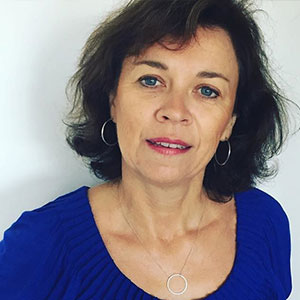
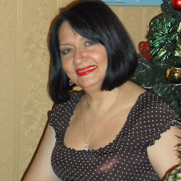
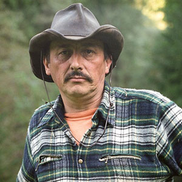
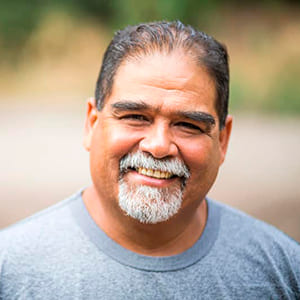
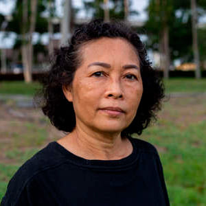
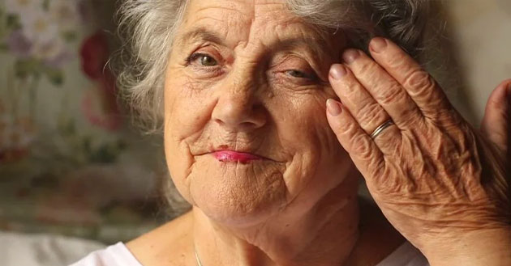
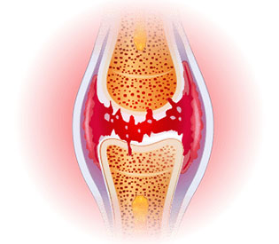
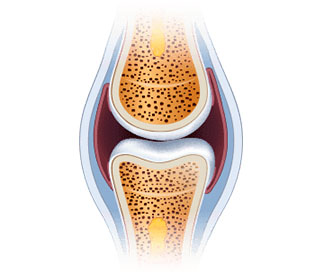
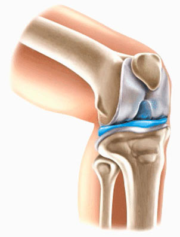

Din cauza durerii din genunchi și spate, abia puteam merge.
Pastilele, injecțiile și intervențiile chirurgicale nu m-au
ajutat. Dimpotrivă: mi-au luat banii și energia. Nu știam ce să
fac. Din fericire, am aflat despre . Și cât
de bine am făcut-o! Am început să mă simt mai bine din prima zi de
aplicare. O lună mai târziu, mă simt ca nou-nouță. Fac plimbări
îndelungate și am grijă de grădina pe care am plantat-o cu nepoata
mea. Am uitat de durere. Mulțumesc!
★ ★ ★ ★ ★
Nicoleta Petrescu,
73 de ani

Simplitate și eficiență
Este greu de crezut că o astfel de metodă simplă este atât de
eficientă. E suficient de a aplica pe zona
afectată și bucurați-vă de mișcări fără disconfort. Sora mea,
verii și cu mine l-am folosit și l-am recomandat tuturor. Spune la
revedere disconfortului articular.
★ ★ ★ ★ ★
Mădălina Grigoriță, 67 de ani
Mă simt necesar.
Anii de muncă grea în companie mi-au obosit destul de mult
genunchii. Le-am promis nepoților mei că voi juca fotbal cu ei sau
voi merge cu bicicleta, dar nu am putut din cauza durerii. Copiii
nu au înțeles acest lucru și s-au supărat. M-am simțit inutil.
Până când fiica mea m-a făcut să încerc .
Am simțit imediat diferența. A trecut o lună de când îl folosesc
și mă simt invulnerabil, acum pot petrece timp cu familia, mai
ales cu nepoții mei, ca înainte.
★ ★ ★ ★ ★
Emilian Tabacu,
67 de ani

Mi-am recăpătat viața.
Excesul de greutate și anii de muncă mi-au distrus genunchii, nu
puteam suporta durerea, așa că luam mai mult de 10 pastile pe zi.
Dar eram foarte bolnavă și voiam să dorm, nu puteam trăi normal.
Din fericire, o colegă mi-a recomandat acest produs minunat.
s-a dovedit a fi soluția perfectă. Durerea
a dispărut ca un farmec și m-am putut întoarce la locul de munca
ca coafor. Mi-am recăpătat sănătatea, ceea ce mi-a permis să încep
antrenamentul și... Am pierdut 10 kg de greutate! Schimbări
incredibile.
★ ★ ★ ★ ★
Denisa Dobrică, 43 de ani

Soția a încetat să se plângă.
Acasă, soția mea întotdeauna îmi găsea ceva de făcut: să repar
robinetul, să mut dulapul sau să vopsesc ceva. Cum trebuia să mă
aplec și să mă încordez dacă mă doare spatele? Precum și coatele
și genunchii. Din fericire, gelul mi-a
ajutat coloana vertebrală și articulațiile să se recupereze. Am
simțit că am pierdut greutatea pe care o purtam de ani de zile.
Soția mea a încetat să se plângă că nu vreau să o ajut prin casă!
★ ★ ★ ★ ★
Ion Măhadă, 67 de ani

M-am întors la muncă
Imaginați-vă că nu vi se mișcă mâna. E greu, nu-i așa? Exact asta
mi s-a întâmplat, pentru că mă dureau degetele, mâinile mi s-au
umflat și tremurau. Sunt bijutier, ceea ce fac este meseria și
pasiunea mea. A trebuit să închid din ce în ce mai des micul meu
atelier și, din această cauză, aveam din ce în ce mai puțini bani
în casă. Am început să caut metode de restaurare a articulațiilor
și peste tot mi s-a spus că acest produs este cel mai bun
. L-am încercat fără să-l verific, dar
după 30 de zile mâinile mele au devenit mai sănătoase decât acum
10 ani. Am reușit să mă întorc la muncă!
★ ★ ★ ★ ★
Ghiță Chirilă, 55 de ani
O viață nouă la un preț atât de mic
De obicei, dacă ceva este eficient, trebuie să fie scump. Acesta a
fost cazul specialistului meu de masaj personal, care m-a costat
paisprezece mii pe lună și a trebuit să facă minuni. Dar,
dimpotrivă, starea s-a înrăutățit, iar articulațiile și coloana
vertebrală au început să doară și mai mult. Când cumnatul meu m-a
sfătuit să încerc , am crezut că e postie
completă. Cum mă poate ajuta un gel când un presupus maseur
fenomenal nu m-a ajutat? Ar fi trebuit să-mi vedeți fața când
durerea a dispărut. Doar un miracol!
★ ★ ★ ★ ★
Otilia Vasilică, 67 de ani

Singura metodă eficientă
Am încercat diferite metode pentru a scăpa de durerea din șold.
Nimic nu m-a ajutat. Ce este încă mai rău, degenerarea s-a
răspândit la nivelul coloanei vertebrale. Cu
totul s-a întâmplat invers. Nu mai sunt
îngrijorată de sănătatea mea pentru că sunt 100% sănătoasă!
★ ★ ★ ★ ★
Corina Dobrică, 59 de ani
1 lună - și nu va exista nici o urmă de durere în articulații și
coloană vertebrală! Oamenii de știință au inventat o nouă metodă!
Bună ziua,
numele meu este Emanoil Mihalache, sunt expert, om de știință și
specialist în domeniul biologiei moleculare. Aici vreau să vă prezint
cea mai mare realizare din viața mea. Am dezvoltat o metodă prin care
oricine poate elimina durerea, precum și restabili articulațiile și
coloana vertebrală și, în același timp, își poate întoarce 100% din
mobilitate în doar o lună.
Metoda vă va ajuta să scăpați de frica de a deveni un handicap
neajutorat! Dacă doriți în condiții de SIGURANȚĂ ȘI RAPID:
Pentru a elimina durerea articulațiilor și a coloanei vertebrale –
veți simți ușurarea imediat după aplicarea metodei;
Pentru a restaura și întări articulațiile, tendoanele, mușchii și
coloana vertebrală cu 87%, astfel încât acestea să funcționeze ca
noi;
Pentru a returna 100% din sănătatea fizică și să nu vă fie frică să
deveniți handicap;
Pentru a eliminați rigiditatea și amorțeala articulațiilor și a
coloanei vertebrale, restabili confortul și netezimea mișcărilor;
Protejați-vă articulațiile și coloana vertebrală de distrugere și
mențineți sănătatea fizică absolută pentru anii următori;
Pentru a elimina distrofia, inflamația etc. - a reduce durerea și
restabili confortul în mișcare;
Pentru a restabili organismul după fracturi, entorse și leziuni;
Și datorită acestui lucru, veți avea de 3 ori mai multă energie și
vă veți bucura din nou de viață!
Trebuie să știți că toate acestea pot fi realizate fără operații
periculoase, terapie costisitoare, cozi nesfârșite către specialiști
(care lasă mâinile și ei, incapabili să vă ajute...) și fără a lua
substanțe chimice toxice (dăunătoare ficatului, stomacului și
rinichilor)... și, în sfârșit, să economisiți mii de lei. Dacă doriți
să faceți acest lucru, trebuie să citiți ce vreau să vă spun.
Nu contează câți ani aveți sau cât timp suferiți de dureri articulare
sau ale coloanei vertebrale. Nu contează dacă oasele voastre scârțâie
timp de 2 zile sau 20 de ani. Chiar dacă un specialist v-a spus că
articulațiile și coloana vertebrală sunt complet distruse și ați
pierdut orice speranță de viață normală... Știți acest lucru, într-o
lună vă veți putea bucura de mobilitate 100%. Fără durere!
Frica pentru articulațiile dureroase ale mamei mele mi-a dat ideea
metodei
Conform studiilor recente, unul din trei rezidenți cu vârsta cuprinsă
între 36 și 95 de ani are probleme cu articulațiile sau coloana
vertebrală. Din păcate, această problemă a afectat-o și pe mama mea.
La început, i-a fost greu să urce scările sau să se ridice de pe
canapea. Dar apoi a devenit și mai rău... Grădina, de care era atât de
fericită să aibă grijă, a început să se umple cu buruieni, pentru că
nu putea să aibă grijă de ea. A încetat să ne mai invite la cină cu
toată familia. Devenea din ce în ce mai iritabilă și tristă. Apoi, din
cauza durerilor în genunchi, șolduri, coloană vertebrală și coate,
nici măcar nu se putea spăla.
Din cauza problemelor cu articulațiile, aproape că a murit!
Cel mai rău lucru a fost că imobilitatea a început să-i amenințe
viața. Nu voi uita niciodată ziua în care am dus-o pe mama la un
specialist în domeniul gastroenterologiei. Mama mea a trebuit să
traverseze strada, și... aproape a fost lovită de o mașină! Ea mergea
foarte încet din cauza durerii și, dintr-o dată, genunchiul ei a
devenit atât de rigid și dureros încât nu a putut face mai mult decât
un pas. Șoferul a frânat în ultimul moment...
Am fost furios când am văzut geanta mamei mele plină de diverse
remedii pentru articulații reclamate. S-a dovedit că le-a cumpărat pe
toate. Așa că a devenit clar de ce are ulcer gastric, probleme
hepatice și alte probleme de stomac... Femeia a vrut să facă ceva, dar
aceste produse nu numai că nu au ajutat-o, ci i-au otrăvit complet
organismul.
Am reușit să dezvolt o metodă FĂRĂ aditivi periculoși și chimici!
A trebuit să o ajut pe mama să-și recapete articulațiile sănătoase și,
împreună cu ele, sănătatea și bucuria de viață. Am vrut ca ea să fie o
străbunică pentru nepoții mei, la fel cum a fost o mamă superbă pentru
mine. Apoi m-am gândit: "Omule, ești om de știință! Ai participat la
descoperirea multor substanțe care luptă împotriva diferitelor boli.
De ce nu poți dezvolta un remediu de întărire a articulațiilor?» Deci,
acum că am început testarea...
Pe parcursul anului am efectuat studii intensive de laborator. Am
testat diverse combinații de substanțe active pe mama mea. Subliniez
că totul a fost 100% natural și sigur pentru organism. M-am inspirat
din rețetele pe bază de plante din mănăstiri și le-am combinat cu cele
mai recente progrese în biologia moleculară. Cunoștințele științifice,
credința în natură și un pic de noroc au dat roade rapid: am venit cu
o formulă macromoleculară unică.
Am început imediat să efectuez teste la scară largă. Eficiența de 98%
a fost confirmată de cele mai mari laboratoare de cercetare din Europa
și SUA! Chiar și în stadiul de testare, formula mea macromoleculară a
restabilit în mod natural funcțiile articulațiilor și coloanei
vertebrale la mii de voluntari.
Efecte uimitoare aproape instantaneu
Durerea mamei mele a scăzut imediat după utilizarea produsului. A fost
foarte bucuroasă că nu mai era chinuită de durerea palpitantă din
genunchi. Dar acesta era doar începutul. După o lună, articulațiile și
coloana vertebrală au încetat să o chinuie și să devină amorțite. Apoi
umflarea genunchilor și a coatelor a dispărut, toată inflamația
articulațiilor și a coloanei vertebrale a dispărut. Mama s-a întors
să-și cultive grădina iubită. Cu toții am fost uimiți când s-a urcat
brusc pe bicicletă și a plecat fericită!
- De ce mergeți atât de încet? - a întrebat ea nerăbdătoare când toată
familia mergea la prânz. Iar noi încă nu am ieșit din obiceiul de a
merge încet în prezența ei. După 5 săptămâni, mama mea a mărturisit
fericit: "Fiule, articulațiile mele s-au recuperat. Mă simt la fel de
vie ca atunci când eram tânără! Ai inventat un remediu pentru durerile
articulare! Câți oameni vei ajuta! Îți sunt foarte recunoscătoare." Și
într-adevăr, la vârsta de 85 de ani, mama mea dansează cu fericire cu
nepoții ei. Și oaspeții au rămas uimiți, când au văzut forma în care
se află ea!

Mama și-a recăpătat complet mobilitatea și, odată cu ea, energia și
bucuria vieții.
Până acum, deteriorarea articulațiilor și a coloanei vertebrale a fost
inevitabilă de-a lungul anilor. Astăzi, cu ajutorul formulei mele
macromoleculare, procesul de uzură a articulațiilor și vertebrelor
scheletului uman nu numai că poate fi încetinit, ci și inversat.
Până de curând, acesta era doar fantastic: de a restabili tinerețea
articulațiilor. Acum este posibil!
Articulațiile și coloana vertebrală se uzează de-a lungul anilor din
cauza excesului de greutate, a muncii fizice grele, a transportului
obiectelor grele, a sportului excesiv, a rănilor și a vânătăilor.
Lichidul sinovial și cartilajul se distrug. Articulațiile încep să se
frece una de cealaltă și se prăbușesc constant. În timp, începeți să
simțiți rigiditate și durere teribilă care vă împiedică să vă mișcați
normal. Se dezvoltă inflamația și degenerarea severă.
Din păcate, cartilajul și celulele lichidului sinovial nu au
capacitatea de a se auto-recupera. Aceasta înseamnă că, spre deosebire
de alte celule din organismul uman, ele nu pot reveni la viață. De
aceea, articulațiile și coloana vertebrală se înrăutățesc în fiecare
zi. Desigur, nu veți înceta să mergeți și să vă faceți treburile
zilnice pentru a vă proteja articulațiile și coloana vertebrală. Ar fi
absurd.
Prin urmare, sarcina mea a fost să creez o formulă unică care va ajuta
la eliminarea durerii, la restabilirea articulațiilor și coloanei
vertebrale deteriorate și să le protejeze de daune în viitor. Și am
făcut-o! Am dezvoltat o formulă macromoleculară pentru regenerare
intensivă. Am numit-o .
Formula unică ajută substanțele active să pătrundă instantaneu în
zonele afectate și să oprească impulsurile electrice de durere la
nivel celular, astfel încât să vă puteți ocupa de treburile sale fără
durere. Datorită proprietăților sale, formula stimulează nutriția
celulară, care accelerează procesele regenerative cu 300%. În același
timp, ingredientele naturale ajută la începerea proceselor de
regenerare automată a cartilajului și a lichidului sinovial. Aplicarea
regulată a gelului este suficientă pentru ca regenerarea să aibă loc
24 de ore pe zi. Faceți ceea ce faceți întotdeauna, iar articulațiile
și coloana vertebrală vor deveni mai tinere și vor câștiga mobilitate.
Astfel, degenerarea și durerea dispar pentru totdeauna în 30 de zile.
Fără efecte secundare!
De ce formula mea macromoleculară a fost numită "un antidot minunat
împotriva durerilor articulare"?
LA MAI MULT DE 98% DINTRE PERSOANELE CARE UTILIZEAZĂ , ÎȘI
RESTAUREAZĂ ȚESUTUL CARTILAJULUI ȘI LICHIDUL SINOVIAL

ÎNAINTE
Articulația este distrusă și afectată de degenerare și durere

DUPĂ
Articulație restaurată: 100% sănătoasă și nedureroasă
Până acum poate părea un miracol. Cu toate acestea, este un fapt care
confirmă cazul mamei mele și a 14 mii de oameni care au reușit deja să
restabilească articulațiile puternice și coloana vertebrală datorită
metodei mele. Cercetătorii din SUA (Chicago) au confirmat, de
asemenea, eficacitatea formulei mele. Aceasta este o descoperire la
nivel mondial care a câștigat recunoașterea și admirația celor mai
buni specialiști în domeniul reumatologiei, ortopediei și neurologiei.
Pe de altă parte, am continua să primesc scrisori emoționale de la
oameni mulțumindu-mi pentru "că și-au restaurat articulațiile." Acesta
este motivul principal pentru care sunt fericit și mândru de această
descoperire.
100% SIGUR ȘI UȘOR DE UTILIZAT

Ingredientele naturale fac minuni: știința a reușit să creeze
compoziția perfectă! Acest motto m-a însoțit când am creat această
formulă macromoleculară pentru restaurarea articulațiilor. Doar
aplicați o cantitate mică de produs cu mișcări circulare de masaj
până când se va absoarbe complet de 2-3 ori pe zi și reveniți la o
viață deplină! (Efectul depinde de caracteristicile fiecărui
organism).
Toți prietenii și rudele care v-au considerat deja handicap vor fi
uimiți. Când vă vor vedea alergând, mergând cu bicicleta și dansând
fără durere, nu vor crede că v-ați restaurat articulațiile în 30 de
zile!
AMELIORAREA INSTANTANEE A DURERII
UN REMEDIU NATURAL FĂRĂ EFECTE SECUNDARE
RESTAURAREA ARTICULAȚIILOR ȘI A COLOANEI VERTEBRALE
UȘOR DE UTILIZAT
RECUPERARE 100% ÎN 30 DE ZILE
ECONOMISIND MII DE LEI
Nu ratați ocazia de a învinge durerea și de a restabili sănătatea
articulațiilor!
Puteți continua să suferiți de dureri chinuitoare la nivelul
articulațiilor și coloanei vertebrale. Vă puteți distruge sănătatea cu
substanțe chimice dăunătoare și puteți trăi cu teama de invaliditate
iminentă. Dar pentru ce, dacă vă garantez o modalitate rapidă, simplă
și ieftină de a ajuta la refacerea articulațiilor și a coloanei
vertebrale? Aveți nevoie doar de 30 de zile pentru a vă alătura celor
14.000 de persoane care au reușit să scape de problemele articulare cu
. Și acum se bucură de o sănătate bună!
Nu riscați cu nimic!
Ca instrument dovedit și aprobat pentru utilizare,
are o garanție triplă prestigioasă:
originalitate, calitate și satisfacție.
Garanție triplă a satisfacției
1. Garanția originalității: în produsul macromolecular este
utilizată o formulă bazată pe cele mai puternice substanțe,
eficacitatea sa este confirmată prin teste. Prin urmare, puteți fi
sigur că veți primi un produs original disponibil numai prin
intermediul acestui site web.
2. Asigurarea calității: datorită procesului avansat de fabricație a
formulelor macromoleculare, acesta corespunde celor mai înalte
standarde de calitate. Concentrația substanțelor active este selectată
astfel încât utilizarea sa să fie complet sigură. Și toate acestea
pentru ca acțiunea sa să răspundă așteptărilor dvs. 100%.
3. Garanția eficacității: numeroasele teste ale consumatorilor
confirmă eficacitatea crescută a gelului .
Datorită acestor rezultate, remediul a primit recunoaștere de la
experți din întreaga lume care îl recomandă clienților lor.
Veți uita de durere, vă veți restabili articulațiile și veți restabili
sănătatea fizică 100% în 30 de zile ușor, sigur și economic.
Marile companii farmaceutice din SUA și Japonia luptă literalmente
pentru un brevet pentru formula mea macromoleculară. Când o voi vinde,
produsul va fi disponibil în toată lumea, dar, desigur, la un preț
exorbitant.
Până când acest lucru nu s-a întâmplat, am decis să-l pun la
dispoziție în țara noastră, oferindu-vă să îl cumpărați cu o reducere
de 50%. Toate pentru a ajuta cât mai mulți oameni din patria mea să
scape odată pentru totdeauna de problemele cu articulațiile și coloana
vertebrală.
Prin urmare, vă îndemn să profitați de această oportunitate! Plasarea
comenzii este foarte simplă. Nu trebuie să trimiteți bani sau să
plătiți cu cardul pentru a primi produsul. Tot ce trebuie să faceți
este să completați formularul în 2 minute și în câteva zile veți primi
coletul pentru care veți plăti curierului.
Vă mulțumim pentru timpul acordat pentru a citi mesajul meu. Vă doresc
multă sănătate și sunt sigur că... În doar 30 de zile, veți dansa,
alerga, merge cu bicicleta și veți putea face toate lucrurile pe care
durerea le-a limitat până acum!
Emanoil Mihalache
Obțineți cu o reducere 50%
Comentarii:
Ovidiu Voinea
Povestea vieții! Am trecut prin nouă cercurile iadului, toate
procedurile, masajele și pastilele. Articulațiile mele m-au
durut și au continuat să mă doară. Încă mă dor. Unde pot găsi
acest gel?
Răspunde Plângeți-vă
Luminița Țuțea
Acest remediu nu este vândut în farmacii private! Am fost la
toate farmaciile private din oraș! Am comandat aici, remediul a
venit repede, în plus, fac o reducere aici. Am început cursul :)
Răspunde Plângeți-vă
Gabriel Oană
Am avut două operații. Am fost culcat aproximativ șase luni,
recuperarea a luat foarte mult timp. Am comandat
și o lună mai târziu am uitat de
operație, genunchii mei au încetat să mai doară și să se umfle!
Un remediu foarte bun fără efecte secundare.
Răspunde Plângeți-vă
Dragoș Dima
Bunicul meu folosește . Spune că e ca și
cum s-ar fi născut din nou. Înainte de asta, stătea întins în
pat toată ziua, iar acum face ceva constant, îl văd mereu
ocupat.
Răspunde Plângeți-vă
Daniel Manole
Lucrez ca antrenor. Articulațiile mele adesea dor și
mă ajută. Remediul ameliorează durerea
și restabilește rapid articulația deteriorată.
Răspunde Plângeți-vă
Adela Dârjan
Am făcut patinaj artistic toată viața, dar a trebuit să
renunț... mă dor articulațiile. Nu m-am adresat la un
specialist. Specialiștii prescriu o mulțime de remedii scumpe,
dar nu a adus niciun rezultat. Am avut noroc, mătușa mea
lucrează ca farmacist și mi-a sfătuit să caut
. Aveam nevoie doar de 3 pachete pentru o
recuperare completă!
Răspunde Plângeți-vă
Maria Radu
Acum un an mi-am rănit brațul stâng, cotul mă doare constant.
Specialiștii au vrut să mă opereze. M-am speriat, am refuzat și
m-am dus să caut soluții alternative.
bunica mi l-a dat, el o ajută. După
primele câteva aplicații, durerea s-a potolit, dar disconfortul
a rămas. Apoi gelul s-a terminat ... Voi comanda mai mult)
Răspunde Plângeți-vă
Catalin Rusu
Am reușit să scap de artrita cronică cu !
Doar într-un curs! Soția mea l-a cumpărat pentru mine. Ea a spus
că a auzit despre eficacitatea sa și a fost la toate farmaciile
noastre private, iar apoi vânzătorul i-a spus că îl putem
cumpăra doar prin Internet.
Răspunde Plângeți-vă
Ovidiu Tămaș
Sunt de acord cu toate comentariile. Acest remediu funcționează
cu adevărat! Mi-am asumat riscul de a cumpăra, am încercat o
mulțime de unguente, remedii și pastile înainte de asta. Efectul
a fost întotdeauna temporar. După aplicarea gelului
articulațiile au încetat să doară pentru
totdeauna. Cursul a durat puțin mai mult de o lună.


Comentarii:
Ovidiu Voinea
Povestea vieții! Am trecut prin nouă cercurile iadului, toate procedurile, masajele și pastilele. Articulațiile mele m-au durut și au continuat să mă doară. Încă mă dor. Unde pot găsi acest gel?
Luminița Țuțea
Acest remediu nu este vândut în farmacii private! Am fost la toate farmaciile private din oraș! Am comandat aici, remediul a venit repede, în plus, fac o reducere aici. Am început cursul :)
Gabriel Oană
Am avut două operații. Am fost culcat aproximativ șase luni, recuperarea a luat foarte mult timp. Am comandat și o lună mai târziu am uitat de operație, genunchii mei au încetat să mai doară și să se umfle! Un remediu foarte bun fără efecte secundare.
Dragoș Dima
Bunicul meu folosește . Spune că e ca și cum s-ar fi născut din nou. Înainte de asta, stătea întins în pat toată ziua, iar acum face ceva constant, îl văd mereu ocupat.
Daniel Manole
Lucrez ca antrenor. Articulațiile mele adesea dor și mă ajută. Remediul ameliorează durerea și restabilește rapid articulația deteriorată.
Adela Dârjan
Am făcut patinaj artistic toată viața, dar a trebuit să renunț... mă dor articulațiile. Nu m-am adresat la un specialist. Specialiștii prescriu o mulțime de remedii scumpe, dar nu a adus niciun rezultat. Am avut noroc, mătușa mea lucrează ca farmacist și mi-a sfătuit să caut . Aveam nevoie doar de 3 pachete pentru o recuperare completă!
Maria Radu
Acum un an mi-am rănit brațul stâng, cotul mă doare constant. Specialiștii au vrut să mă opereze. M-am speriat, am refuzat și m-am dus să caut soluții alternative. bunica mi l-a dat, el o ajută. După primele câteva aplicații, durerea s-a potolit, dar disconfortul a rămas. Apoi gelul s-a terminat ... Voi comanda mai mult)
Catalin Rusu
Am reușit să scap de artrita cronică cu ! Doar într-un curs! Soția mea l-a cumpărat pentru mine. Ea a spus că a auzit despre eficacitatea sa și a fost la toate farmaciile noastre private, iar apoi vânzătorul i-a spus că îl putem cumpăra doar prin Internet.
Ovidiu Tămaș
Sunt de acord cu toate comentariile. Acest remediu funcționează cu adevărat! Mi-am asumat riscul de a cumpăra, am încercat o mulțime de unguente, remedii și pastile înainte de asta. Efectul a fost întotdeauna temporar. După aplicarea gelului articulațiile au încetat să doară pentru totdeauna. Cursul a durat puțin mai mult de o lună.